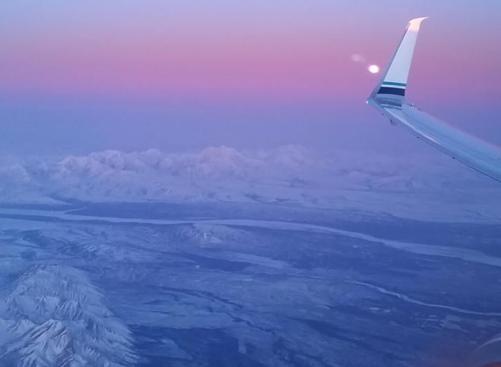
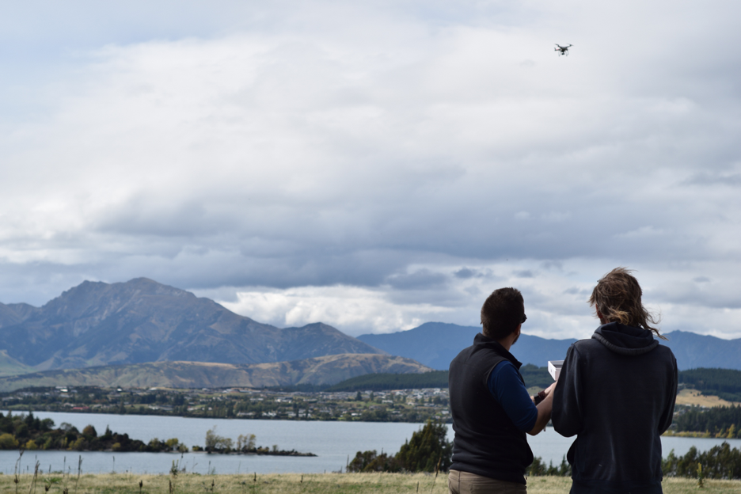
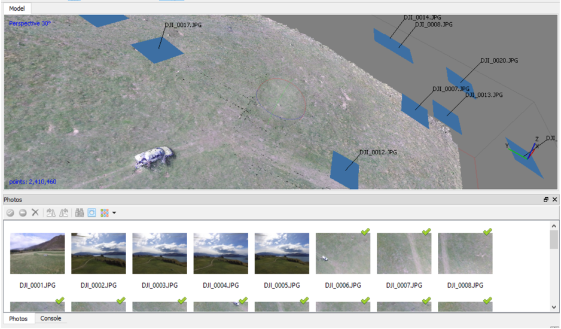

Using a drone to build 3D Structure-From-Motion models in New Zealand, Part 1: Evangelizing drones for science
Posted on Wed 13 July 2016 in Expeditions
This blog is cross-posted with a post on the ESIP Federation website. Find it here.
On a frozen morning late in March of 2016 I boarded a plane to make the long trip from Fairbanks Alaska to the South Island of New Zealand—nearly a full two days that would register on my calendar as three days because we cross the international dateline while traversing the Pacific. I remember thinking as they de-iced the wings that by the time I returned, Fairbanks would have thawed for spring and the runways would no longer be covered in frost. At the same time I was trying to wrap my head around the idea that in New Zealand, winter was just about to begin. It seemed like I was traveling to a different world.

This was the beginning of my trip to New Zealand to meet with researchers at the Antarctic Research Center and try to fly my small hobby-grade drone to collect imagery of geological formations and of an enormous glacier.
For the past several months I've been working as the in-house data scientist and general researcher for an unmanned aircraft company in Alaska. But even though I had been working for a drone company, up until this project, my field work experience had been fairly limited. In addition to working with drone data, I've long been passionate about open data/open science and citizen science. So it was natural for me to be curious about how easily scientific data-collection technique could be applied to off-the-shelf drone hardware. I could get results with an inexpensive off-the-shelf drone, then I could maybe help make drone science accessible to a much larger audience. With generous funding from the S.T. Lee Travel Grant, I was on my way to meet up with similarly minded researchers at the Antarctic Research Center, at Victoria University Wellington.
Evangelizing drones for science
My first drone flight in New Zealand was more about evangelizing drones than about collecting science-grade data. I met with Dr. Brian Anderson and his graduate student Lauren Vargo in Wanaka, New Zealand. They had just been rained off of Brewster Glacier after a long expedition of taking measurements to monitor the glacier’s retreat. With a few quick emails, Dr. Anderson was able to get us permission to fly in a local RC Aircraft range (more of a field, really), and the three of us rushed out to beat the incoming rain. I was adamant that both Dr. Anderson and Lauren try flying the DJI Phantom themselves to see how easy it could be to collect imagery. In the image below you can see me showing Dr. Anderson how to control the Phantom and giving a few tips on flying.
You can't see it in the image, but the clip that comes with the Phantom controler couldn't support the iPad I was using to fly it. Luckily, I still had the box that the iPad came in; so by carving up the box and applying generous amounts of duct tape, I was able to make my own off-the-cuff controller mount.

Although these flights were mainly about introductions (to the people and the hardware), we did collect a lot of imagery of the field where we were flying. When I later met with Dr. Anderson in his home on New Zealand’s west coast we threw this imagery into Agisoft Photoscan and built a 3D model.

The model itself was a bit crude by photogrammetry standards, which is not surprising given that we didn’t intend to do anything with the imagery when we originally collected it. The image above shows a screenshot of the 3D model in the Agisoft Photoscan software. The blue squares show the various positions from which the drone took pictures; these are the pictures that were used to build the model. In the lower half of the image there is a section that shows the drone photos that we used. The first five images were at too great of an angle to be useful, and were not processed by the software. Our car shows up in the model, but it shows up blurry. This is due to us standing around the car and moving in between pictures. In some of the more detailed model runs we could even see ourselves as blurred forms casually leaning against the car. As you’ll see in the my next few blog posts, this type of processing becomes much more valuable when we apply it to field-sites of on-going study, such as glaciers.
Next Time
In the next blog post I'll be showing a case-study of generating a 3D Structure-From-Motion model of the Castle Hill rock formation in New Zealand using imagery taken on-the-spot with my DJI Phantom. Come back soon.

Acknowledgements and Support
The trip was made possible with support from the S.T. Lee Young Researcher Travel Award through the Antarctic Research Center at Victoria University of Wellington and the International Arctic Research Center, University of Alaska Fairbanks. Generous funding, support, and project management and advising were also provided by the Alaska Center for Unmanned Aircraft Systems Integration (ACUASI) at the Geophysical Institute, University of Alaska Fairbanks.
About the Author
Sean Barberie is a recent graduate from the University of Alsaka Fairbanks with an interdisciplinary M.S. in Geospatial Data Science. He is a current student fellow at the ESIP Federation where he is able to pursue his interest in geospatial data for disaster response, and science communication. His research interests include drones, data science, data visuzalization, and remote sensing.
Contact
SRBarberie@gmail.com | http://twitter.com/seanbarberie | http://seanrgb.github.io/